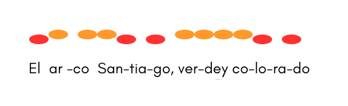
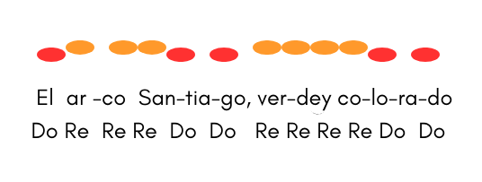

Minha Canção: propuesta didáctica para el abordaje de las notas musicales
Do-Re: Melodías con 2 alturas
Enfoque desde las competencias específicas
A medida que avanzamos en la secuencia didáctica se van incorporando progresivamente elementos detallados en estos cuadros de referencia.
Competencias específicas
Criterios de logro
Contenidos
Sensoperceptiva
Desarrolla internamente imágenes que le permiten establecer conexiones y relaciones con los estímulos sensoriales
Frases rítmicas (en negras, corcheas y semicorcheas)
Frases melódicas (con 2 y 3 alturas por grados conjuntos)
Obras vocales de proyección folklórica
Iniciación a la lectoescritura musical desde la representación gráfica tradicional y no tradicional del sonido
Interpretativa
Utiliza herramientas del lenguaje sonoro y musical que le permiten analizar, valorar y producir instancias de comunicación
Integra a la interpretación musical la interrelación de diferentes lenguajes artísticos
Cultural
Amplía su repertorio musical a partir de las obras trabajadas
Reconoce, identifica y valora la música de diversas culturas y épocas
Manejo de los elementos del lenguaje musical
Relaciona y aplica con autonomía en audiciones los nuevos conceptos integrados
Discrimina y diferencia auditivamente los elementos del lenguaje musical
Meta de aprendizaje:
Los estudiantes lograrán reconocer y diferenciar auditivamente y por medio de la representación gráfica, dos y tres notas musicales por grado conjunto.
Iniciarán el proceso para la comprensión de la lectoescritura musical como herramienta de expresión y comunicación.
Las notas musicales son los signos que utilizamos en la lectoescritura musical para representar la altura del sonido. Para comenzar vamos a realizar esta práctica auditiva donde deberás reconocer las variaciones en torno a esta cualidad.
El arco Santiago
Escuchemos la melodía en el piano de una canción tradicional "El arco Santiago"
¿Con cuál altura comienza?, ¿la más aguda o la más grave?, ¿y con cuál termina?
De los dos sonidos, ¿cuál se repite más?
Prueba entonarla con tu voz y tocarla en el piano usando las notas Do y Re (que son las que se escuchan en el audio de la melodía). Recuerda que en los pianos virtuales tienes escrito el nombre de las notas en cada tecla.
En el siguiente video podemos escuchar una versión cantada de este tema tradicional.
Al tener solo 2 notas podemos representarlas gráficamente con círculos en diferentes "alturas", un círculo más "arriba" (el sonido más agudo) y otro más "abajo" (el sonido más grave).
Vamos a escribir la primera frase de la canción: "El arco Santiago, verde y colorado", que nos quedaría de la siguiente manera:

Observa que el círculo que está más abajo, con el color rojo es el sonido más grave y corresponde a la nota DO, mientras que el naranja que se encuentra un escalón más arriba, el sonido más agudo y corresponde a la nota RE.

Prueba cantar este fragmento, con el texto de la canción una vez y con el nombre de las notas, realizando un gesto con tu mano más arriba o más abajo según la nota que estás entonando. También intenta tocarlo nuevamente en el piano ahora siguiendo la representación escrita.
Toda melodía transcurre en un tiempo determinado, ya que todo sonido tiene una duración. Vamos ahora a representar, de acuerdo a la lectoescritura musical tradicional, el ritmo de este fragmento musical, para lo que utilizaremos las figuras musicales (ver recurso relacionado).
Vamos ahora a combinar el ritmo (las figuras) con la melodía (las notas) para generar una escritura más precisa de la música que escuchamos.